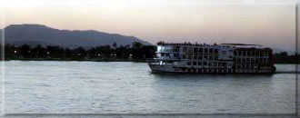
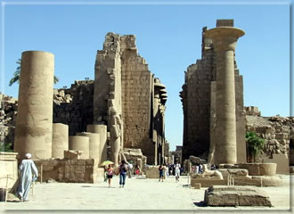

Az egyiptomi utazŠs egyik, sokak szŠmŠra elťrhetetlen kŁlŲnlegessťge volt korŠbban, mŠra nťpszerŻ turista programmŠ vŠltak a nŪlusi hajůutak. Az utazŠs egyszerre ťlmťny testnek ťs az űsi vilŠg kultķrŠjŠnak megismerťsťre vŠgyů szellemnek. ÷tcsillagos hajůk indulnak Luxorbůl ťs jŠrjŠk be az egyiptomi kultķra fű verűerťt, viszik el az utazůt legszebb kincseihez. A NŪlus ťvenkťnti ŠradŠsa teremtette meg a fŠraůk orszŠgŠnak gazdagsŠgŠt, ťs az űsi Egyiptomban ezťrt kŁlŲnŲs tisztelettel adůztak a folyůnak ťs mintegy kŲszŲnetŁk mellť ťpŪtettťk legfontosabb templomaikat. A hajůk mikŲzben felfelť haladnak a NŪluson nemcsak Egyiptom kies tŠjŠt szelik Št, hanem kultķrŠja bŲlcsűjťt is. A hajů megŠll mindazoknŠl az ťpŪtťszeti emlťkeknťl, azzŠ tettťk az orszŠgot, ami: csodŠlatra mťltů lŠtnivalůk kifogyhatatlan tŠrhŠzŠvŠ. Az utazŠs ŠtŲleli Egyiptom Ųsszes fontosabb emlťkťt, az utazŠs elejťn můd nyŪlik Kairů ťs GŪza piramisainak megtekintťsťre, ķtba ejtik a KirŠlyok vŲlgyťt, Hassepszut kirŠlynű templomŠt, a Memmon kolosszust, Edfu ťs Kom Ombů templomait, AsszuŠnt Šs az ElefŠnt-szigetet. Egy hťt felejthetetlen barangolŠs egy mŠig ismeretlen vilŠg relikviŠi kŲzŲtt.

Egyiptomi utazŠsunk egyik legszebb lŠtnivalůja a Karnaki templom-egyŁttes. Luxorbůl a legtŲbben busszal vagy konflissal mennek Karnakba, de aki rŠťr annak - a lŠtvŠny miatt - megťri a gyalogos sťta. HŠrom kilůmťter a tŠvolsŠg, ťs aki nem a NŪlus parti sťtŠnyon megy, hanem keresztŁl kasul a kŁlvŠrosi utcŠkon, az talŠlkozni fog a valůdi Egyiptom arcŠval. Sok gyerek, meglepű szegťnysťg, mindenfelť Šllatok, bizony ez is az utazŠs nagy lŠtnivalůi kŲzť tartozik. De amint feltŻnik Karnak , mindent elfelejt a lŠtogatů. Itthon mŠr mindenki lŠtott růla kťpeket, olvasgatta az ķtikŲnyvet, průbŠlta elkťpzelni, milyen is lehet? Ez az a hely, ahol az elűkťpzťsnek nem sok hasznŠt lehet venni. Hatalmas terŁleten fekszik, ťs olyan sok ťpŁlet maradvŠnyait lŠthatjuk, hogy nehťz tťrkťpszerŻen magunk elűtt lŠtni. Szerencsťre a lŠtvŠny magŠval ragad bennŁnket, az ķtikŲnyv bogarŠszŠsa is ŠltalŠban elmarad. Tudni kell, hogy az ťpŁletek sokasŠga nem egyszerre, hanem kb. kťtezer ťven Št ťpŁlt, Ūgy dinasztiŠnkťnt vŠltozott a kťp ťs gyakran az elűdŲk Šltal ťpŪtett remekmŻvek anyagŠt hasznŠltŠk.